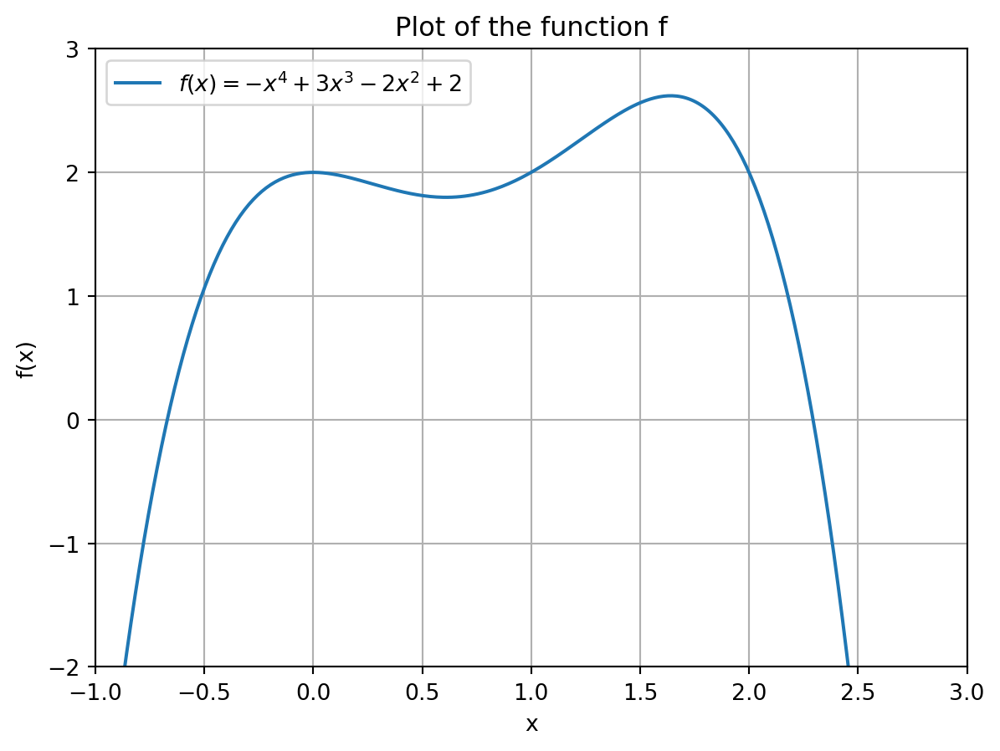

x = [2, 6, 4, 3, 9, 5]Programming for Essential Digital Skills 2024/25 Exam Solutions
Introduction
Block 1: Short-Answer Questions
Question 1
[1 pt] Write a Python command using slicing that will extract the 4 and the 3 from the following list and return the shorter list [4, 3]:
Question 2
[1 pt] The variable x is an integer. Write a Python command that returns True if x is odd and False if x is even.
Question 3
[1 pt] Assuming the math module has already been imported into Python with import math, write a Python command that calculates \log_2\left(8\right). That is, the log of 8 to the base 2.
Question 4
[1 pt] Suppose you have the list x = [343, 729, 1331, 8, 1728]. Write a list comprehension that returns a new list with the cubed root of each element of x. Recall that the cubed root of a number y is y^\frac{1}{3}.
Note: The elements of your new list need only be precise up to 4 decimal places. If you see 6.999999999999999 or 7.000000000000002 instead of 7, your answer will still be correct.
Question 5
[1 pt] Anne speaks English, Irish, German and Dutch. Bart speaks French, English and Dutch. The set of languages Anne and Bart speak can be stored in Python sets as follows:
anne_lang = {'English', 'Irish', 'German', 'Dutch'}
bart_lang = {'French', 'English', 'Dutch'}Using the objects anne_lang and bart_lang, write a Python command using an appropriate set method that returns the set of languages Anne and Bart have in common.
Block 2: Root-Finding Function
In this question you will use an alternative algorithm to find the square root of a number called the False Position Method. This algorithm can find the positive number y that satisfies y^2=x for any x\geq0.
You will write a Python function that takes two inputs:
- x, the number we want to take the square root of. This will be denoted by
xin our code. - \epsilon_{tol}, the tolerance level. This will be denoted by
tolin our code.
The function will return the positive number y that approximately solves y^2-x=0. In other words, it will find a y such that |y^2-x|<\epsilon_{tol}, where \epsilon_{tol} is a small positive number.
The steps of the algorithm are as follows:
- Begin with initial guesses a=0 and b=\max\left\{1,x\right\} for y.
- Compute c according to: c=b- \frac{\left(b-a\right)f(b, x)}{f(b, x)-f(a, x)} where f(z, x)=z^2-x.
- If the distance \left|f(c,x)\right| > \epsilon_{tol}, then update the values of a and b according to: (a,b) = \begin{cases} (a,c) & \text{ if } f(c,x) < 0 \\ (c,b) & \text{ otherwise} \end{cases} and go back to step 2. Otherwise, set y=c and return y.
Use the following template script to write the function findRoot(x, tol) and to answer the questions below: block-2-template.py. Note: using this template is mandatory; failure to do so will result in zero points for this block.
If you completed writing the findRoot(x, tol) function correctly, round(findRoot(2, 1e-6), 8) should return 1.41421356.
[4 pt] Complete writing the function. Use the function to calculate the square root of x=7 with a tolerance level \epsilon_{tol}=0.01. Print the output of
findRoot(7, 0.01)in your script.[2 pt] Add a counter to your
findRoot(x, tol)function which increments by 1 every time step 2 is repeated. After the first time step 2 is performed, the counter should equal 1; after the second time step 2 is performed, the counter should equal 2; etc. The function should then print the value of the counter before returning the output.
Block 3: Data Handling
Download the dataset sales-data-2024.csv. The dataset contains the price and daily sales of a particular product. It has columns (or variables) with the following names:
'year': The year part of the date.'month': The month part of the date as a number (1=Jan, 2=Feb, …, 12=Dec).'day_of_month': The day part of the date.'day_of_week': The day of the week as an abbreviated string ('Mon','Tue', etc.).'price': The price of the product on that date.'sales': The total number of units sold of the product on that date.
Use the following template script to read in the data and to answer the questions below: block-3-template.py. Note: using this template is mandatory; failure to do so will result in zero points for this block. Ensure that the template script and dataset are in the same folder.
Use this dataframe df to answer the following questions:
[1 pt] Write (a set of) Python commands that compute and print the average number of units sold per day.
[1 pt] Create a new column/variable in
dfcalled'daily_revenue'which equals price multiplied by daily sales.[1 pt] Write (a set of) Python commands that computes and prints the mean daily revenue in the dataset.
[1 pt] Write (a set of) Python commands that computes and prints the total number of units sold in May 2024.
[1 pt] Write (a set of) Python commands that creates a column/variable called
'weekend'which isTrueif'day_of_week'is'Sat'or'Sun'andFalseotherwise.[1 pt] Use the column/variable
'weekend'from part e) to compute and print the average daily sales on days that are not on the weekend.
Tips that might be useful (although answers without these tips also exist):
- If
'x'and'y'are names of logical columns indf, one can obtain the rows ofdfwhere either'x'or'y'areTrueusingdf[df['x'] | df['y']]. - If
'x'and'y'are names of logical columns indf, one can obtain the rows ofdfwhere'x'and'y'areTrueusingdf[df['x'] & df['y']]. - If
xis a logical column indf, one can obtain the rows ofdfwherexisFalseusingdf[~df['x']]. - If
xis a numeric column indf, one can obtain its sum withdf['x'].sum().
Block 4
In this block we will investigate properties of the mathematical function f(x) = -x^4 + 3x^3 - 2x^2 + 2.
Use the following template script to answer the questions below: block-4-template.py. Note: using this template is mandatory; failure to do so will result in zero points for this block.
[1 pt] Define the function f(x) = -x^4 + 3x^3 - 2x^2 + 2 as a Python function that takes as input a number x and outputs f(x).
[4 pt] Reproduce the figure below in Python

[1 pt] Create the array \text{guesses} = [-1,-0.9,-0.8,-0.7,-0.6,\dots,0,0.1,0.2,\dots,1] using the
linspace()function from Numpy. Note that this array is a discretization of the interval [-1,1] with steps of size 0.1.[2 pt] Use a for-loop to execute for every element i in the array
guessesof part c), the functionfsolve()with initial guess i in order to find a solution x to the equation f(x) = 3x. Print a list of all the found solutions.
The beginning of the list should look approximately like [-0.9212896099953012, -0.9212896099952392, -0.921289609995239, ...].
Block 5
You are going to write a class whose objects are circles with a given center [x_1,x_2] \in \mathbb{R}^2 and radius r. You will also be asked to create some methods for this class.
Use the following template script to answer the questions below: block-5-template.py. Note: using this template is mandatory; failure to do so will result in zero points for this block.
[1 pt] Create a class called Circle whose initialization method creates objects (circles) whose attributes are a center (x_1- and x_2-coordinate) and a radius (number). When creating an object, the center of the circle will be a list containing the x_1 and x_2-coordinate. Test your class by creating an object with center [2,3] and radius 3, and print its center and radius by accessing its attributes.
[2 pt] Add to your class a method that computes the area \pi \cdot r^2 of the circle, and a method that computes the circumference 2 \cdot \pi \cdot r, where \pi \approx 3.14. You should access the number \pi from the math module/package
mathusingmath.pi. Print the area (should be \approx 28.27) and circumference (should be \approx 18.85) for the circle from part a), that is, with center [2,3] and radius 3.[3 pt] Add to your class a method
circle_check()that checks for any given (external) input point [a_1,a_2] \in \mathbb{R}^2, given as a list of two numbers, whether or not it is contained in the area of a circle object. Mathematically speaking, you need to check if \sqrt{(x_1-a_1)^2 + (x_2 - a_2)^2} \leq r where [x_1,x_2] is the center of the circle object and r the radius of the circle object. To be precise, your methodcircle_check()should returnTrueif the point a is contained in the circle, andFalseotherwise. Test your method on the point a = [3,6] again using the circle from part a) (answer should beFalse).